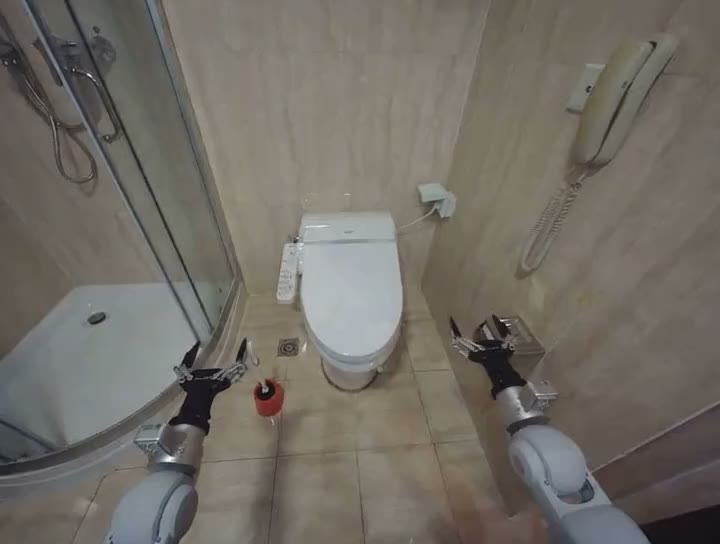

PhysicsLENS · Deformation
Open the toilet lid, clean the bowl with a brush, close the lid, and flush
HunyuanVideo 1.5 · Galbot G1 · RoboCOIN · #095

Human annotation
One annotator's final record from the publisher's consolidated_annotations.csv (one annotation per clip; no inter-annotator agreement exists). Scales and label definitions are quoted from the PhysicsLENS paper, Appendix B, Tables 8–9. JSON
Scores
Physical plausibility (P)2 / 4
- 1 — clearly breaks physics, including clipping, floating, objects appearing or disappearing, or impossible motion.
- 2 — mostly implausible, with one clear issue or several smaller issues.
- 3 — mostly plausible, with minor oddities only.
- 4 — physically realistic.
P01 = 0.3333 · plausible (P≥3) = 0
Action completion (A)no
Judge whether the requested task is completed by the end of the clip, even if the process is physically unrealistic.
A = 0
Hidden-property adherence (H)—
Not collected: observable prompt. The paper does not treat the missing value as 0.
Violation labels · multi-select, 8 labels
| Label | Selected | Definition (paper, Table 9) |
|---|---|---|
| Causality | 0 | An effect occurs without a visible cause, or events occur in an impossible order. |
| Collision | 0 | Objects pass through one another or fail to exhibit an expected response after impact. |
| Contact | 0 | An object floats without support, rests at an incorrect contact point, or fails to maintain visible contact. |
| Deformation | 1 · listed 1st | A rigid object warps or melts, or a soft object fails to deform under an interaction that should alter its shape. |
| Fluid | 0 | Pouring, splashing, containment, or other liquid behavior is physically inconsistent. |
| Friction | 0 | Sliding, sticking, or gripping behavior is inconsistent with the visible interaction or stated surface condition. |
| Gravity | 0 | An object floats, falls incorrectly, or otherwise fails to respond plausibly to gravity. |
| Momentum | 0 | An object accelerates or changes motion without a supporting interaction, including apparent creation or loss of energy. |
| Collision ∪ Contact | 0 | The paper merges Contact into Collision in all analyses (its seven domains have one collision family). |
Issue description
hand deformed
- Annotator
- A5
- Prompt set
- observable
Normalized record
| P | P01 | P≥3 | A | H | H01 | H≥3 | Causality | Collision | Contact | Deformation | Fluid | Friction | Gravity | Momentum | Coll∪Cont |
|---|---|---|---|---|---|---|---|---|---|---|---|---|---|---|---|
| 2 | 0.3333 | 0 | 0 | — | — | — | 0 | 0 | 0 | 1 | 0 | 0 | 0 | 0 | 0 |
P01 = (P−1)/3, H01 = (H−1)/3; thresholds P≥3 and H≥3 are the paper's. Label columns: 1 = selected by the annotator, 0 = not selected (not a confirmation of correctness).
Publisher record 095_galbot_g1_scrub_toilet_ep0_hunyuan15.json
{
"family": "hunyuan15",
"conditioning": "text+image",
"mode": "i2v",
"checkpoint": "480p-i2v",
"params": "8.3B",
"model": "hunyuanvideo-community/HunyuanVideo-1.5-Diffusers-480p_i2v",
"seconds": 5.04,
"prompt": "Scene: A white toilet with a closed lid is positioned against a light beige tile wall. To the left of the toilet is a shower enclosure with a glass door. On the floor next to the toilet, there is a red toilet brush with a black handle. Two robotic arms, metallic gray in color, extend towards the toilet from the perspective of the viewer. The surface of the toilet lid is smooth and dry.\nAction: The robot lifts the toilet lid using one of its arms.",
"negative_prompt": null,
"seed": 0,
"steps": 50,
"guidance_scale": 6.0,
"flow_shift": 5.0,
"num_frames": 121,
"fps": 24,
"height": 544,
"width": 720,
"requested_height": 720,
"requested_width": 960,
"input_size": "640x480",
"resize_mode": "crop",
"dtype": "bfloat16",
"vae_tiling": true,
"offload": false,
"fast_attn": true,
"gen_seconds": 508.1,
"testset_id": "95",
"source_video": "095_galbot_g1_scrub_toilet_ep0.mp4",
"source_frame_idx": 0,
"start_frame": "data/start_frames/095_galbot_g1_scrub_toilet_ep0_frame0.png",
"source_size": "640x480",
"task": "Open the toilet lid, clean the bowl with a brush, close the lid, and flush.",
"out_name": "095_galbot_g1_scrub_toilet_ep0_hunyuan15.mp4",
"model_tag": "hunyuan15"
}